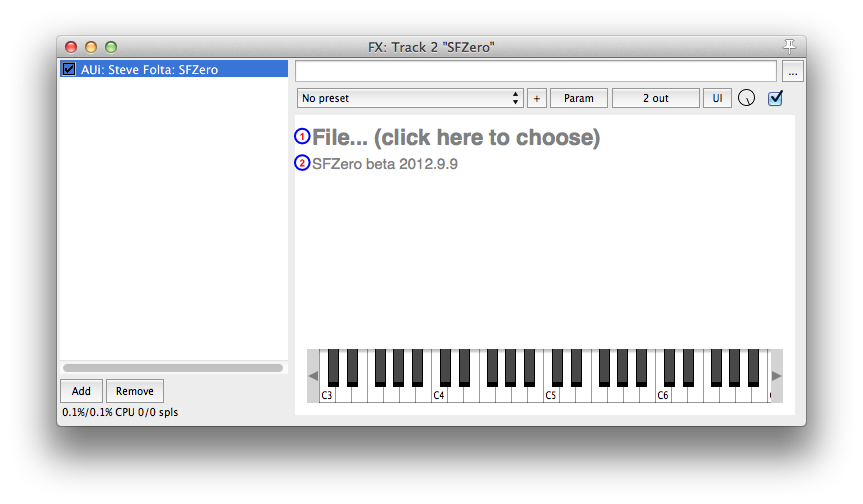
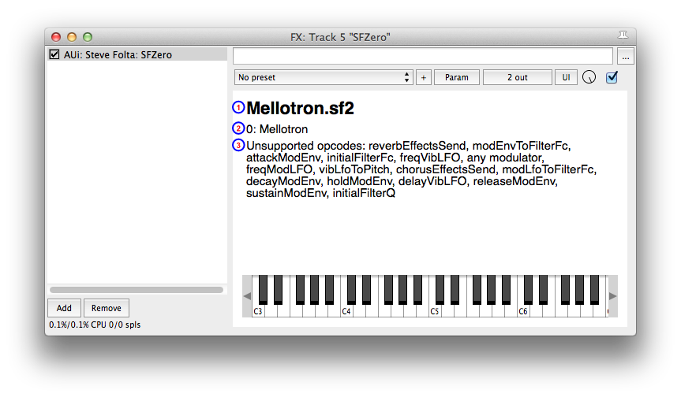

Click on this link to download the latest version:
Unzip that, and copy the "SFZero.component" file to "home/Library/Audio/Plug-Ins/Components".
Unfortunately, Apple has decided to hide the "Library" folder in Lion and Mountain Lion. The easiest way to get to it is to hold down the Option key and then choose "Library" from the Finder's "Go" menu. You can also make it permanently visible if you're not afraid of the command line: open up the Terminal and type chflags nohidden ~/Library/.
Alternately, you could put SFZero.component in "/Macintosh HD/Library/Audio/Plug-Ins/Components". That's actually probably a better place for it, since anyone who logs in as another user on your computer will also be able to use it. But the Finder will make you type in your password to put it there. I don't know whether that "Library" folder is also hidden by default.
If you prefer VST format, Axel Schneider has built that:
When you first load SFZero into your DAW, it'll look something like this:
If you've loaded an SFZ file, or an SF2 with only one "preset", it'll look like this:

If you've loaded an SF2 file with multiple presets, it'll look like this:
SFZero is open source. The source is hosted on GitHub here. The source is under an MIT-style license, but it's built on top of the Juce library, which is GPL, so the resulting binary is GPL as well.
I'd love to have someone do a Windows build!